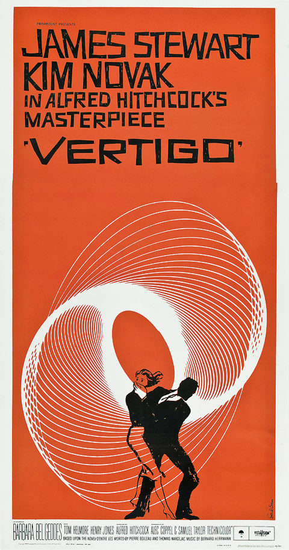
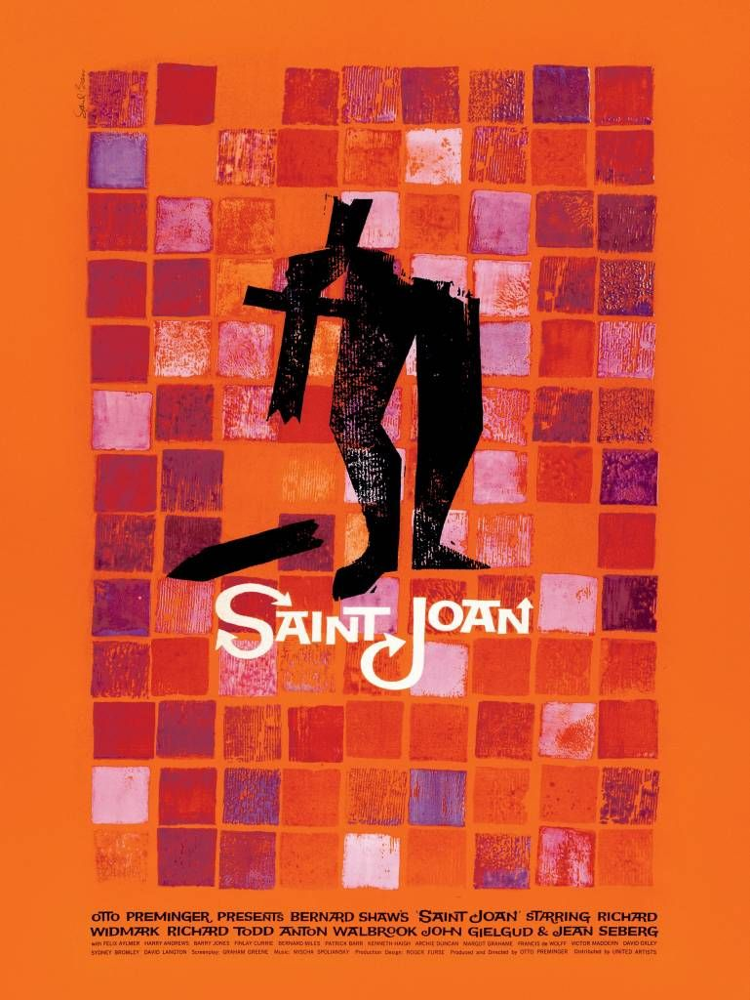
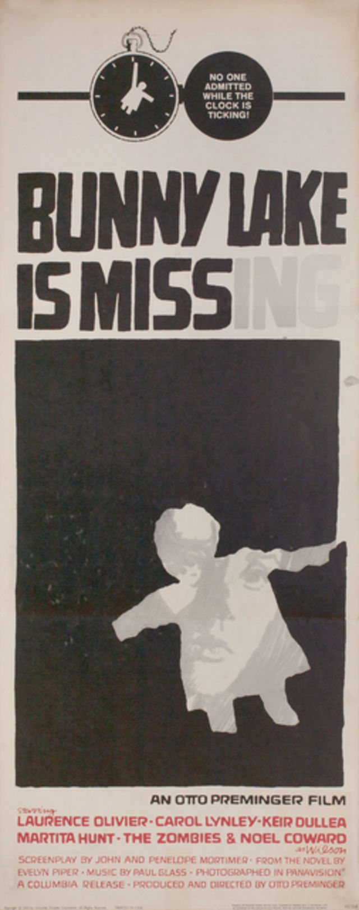

"The Vertigo movie poster that’s become a landmark in graphic design and cinema history is the one sheet poster.
Bass also designed other posters, each with a slightly different design, to match the proportions of the sheet they were printed on.
The poster evokes a sinister atmosphere with its economical use of colour and with letters that grow fainter,
reflecting the notion of disappearance.
Text and image both tell the same story.
The film’s themes of concealing and revealing are subtly incorporated into the poster.
“In the one-sheet poster and album cover, Saul set the symbol against a joyously colored mosaic reminiscent of the stained-glass windows of medieval cathedrals,
and suggesting the sanctification to come.



